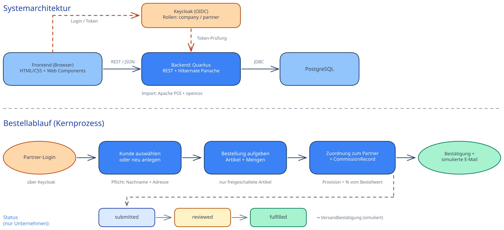

HTL Diplomarbeit · Informatik / IT Medientechnik
Ein internes B2B-Bestellportal für partnerbasierte Vertriebsmodelle. Kette: Unternehmen → Partner → Endkunde.
Chris Vahram & Tobias · Referenzkunde PAPO · 2026
Ausgangslage
PAPO verwaltet Partner und Artikel ohne zentrales System – jede Bestellung verursacht Handarbeit.
Akteure & Kette
Use Case
Funktionsumfang
Zentrale CRUD-Verwaltung durch das Unternehmen, inkl. Provisionsprozent und Aktiv/Inaktiv-Status.
Spalten-Mapping, Duplikaterkennung und Validierungsbericht für Partner- und Artikeldaten.
Produkte werden pro Partner einzeln freigeschaltet – nur freigeschaltete Artikel sind bestellbar.
Landing Screen mit Provision, Umsatz, Bestellanzahl und letzten Bestellungen.
Mehrartikel-Bestellungen mit Mengen, automatische Partnerzuordnung, Statusworkflow.
Prozentsatz je Partner (5/10/15 % oder individuell), als eigener CommissionRecord gespeichert.
Technologie
| Frontend | HTML, CSS, native Web Components / Custom Elementskein externes Frontend-Framework |
| Backend | Quarkus (Java)Quarkus REST, Hibernate ORM mit Panache |
| Datenbank | PostgreSQL |
| Auth | Keycloak (OIDC)Rollen: company, partner |
| Import | Apache POI (xlsx) + opencsv (csv) |
Architektur

Bildschirmaufnahmen
Bewusst nicht gebaut
Diese Punkte sind spezifiziert, aber nicht Teil des MVP – Referenz: phase2_backlog.md
Ausblick